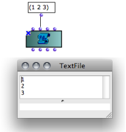
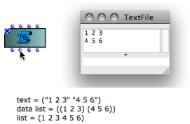

TextFile Edition
The Text Editor
 | The textfile box has a basic editor where texts can be edited or modified. Double click on the box to open the editor. |
Inputs and Outputs

The textfile object has four inputs and outputs :
"self" : the object itself
"exp-list" : set or get the content of the object from/as a list.
"ed-mode" : edition mode, determines the way contents are added in the file.
"eval-mode" : format to interprete and return the text to exp-list.
The " exp-list " input and output represent a textual content. The "exp-list" input accepts :
It allows to set or read the contents of the textfile box within visual programs. The implementation and interpretation of the content depends on the "eval-mode" and "ed-mode" inputs settings. |  Inputting contents with "exp-list". |
The "ed-mode" input determines the way input data is written in the text file with successive evaluations. It offers two options :
"supersede" : the previous content is overwritten by new data.
"append" : new data is appended after the existing contents.
Hence, the results of several successive iterations can be stored in the text buffer.
Click on the input to select an option.

The "eval-mode" input determines the format of the contents returned by "exp-list". Four formats are available :
|  Three options for formatting the text contents with "eval-mode". The result appears when evaluating the "exp-list" output. |